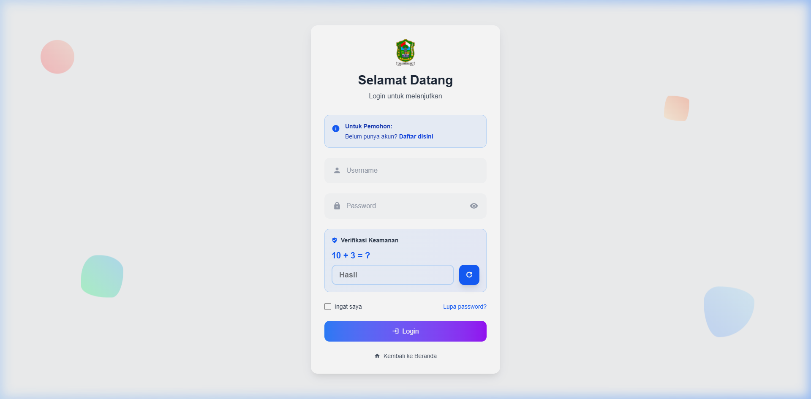
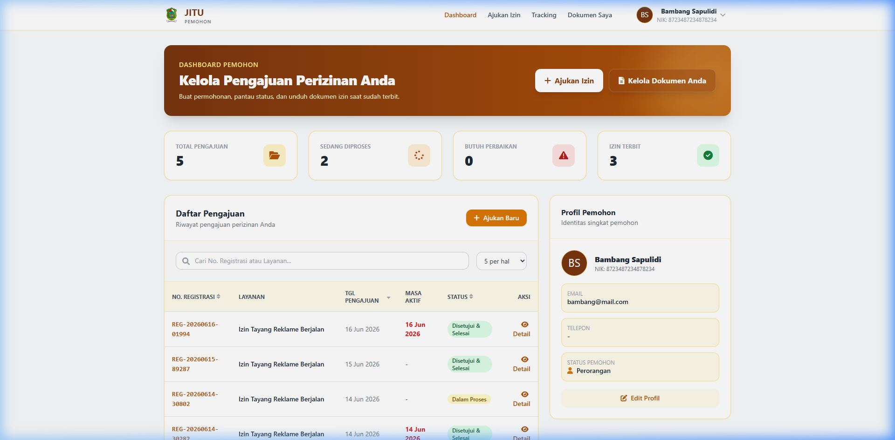
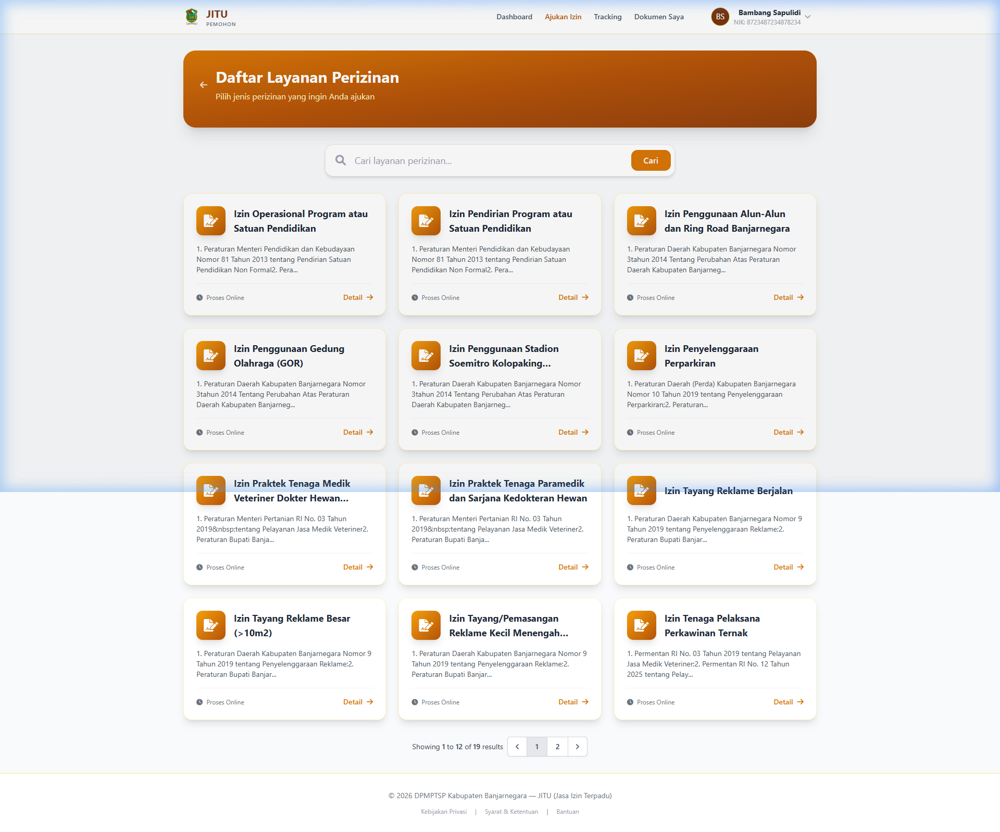
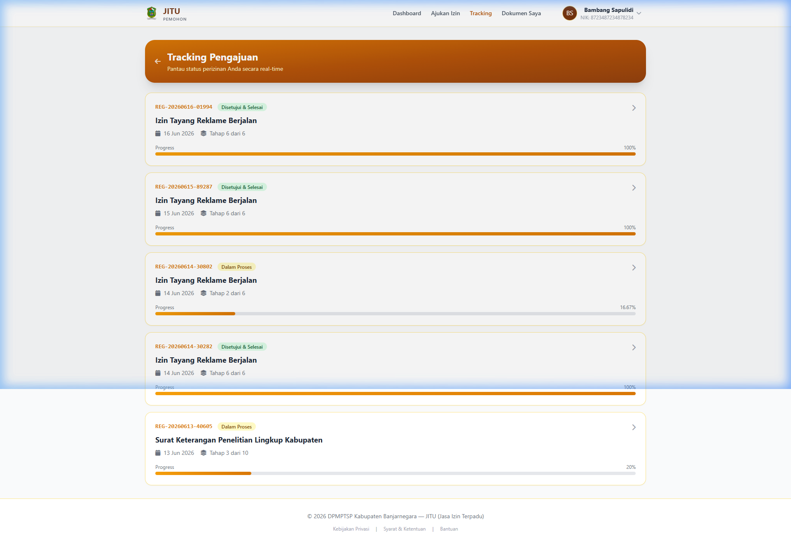
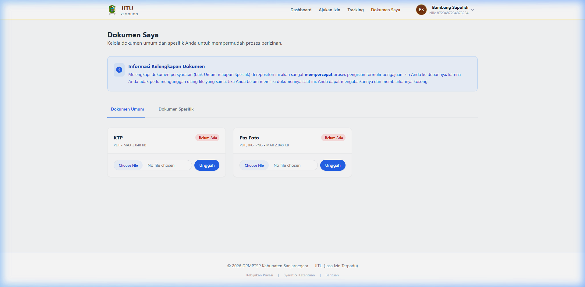
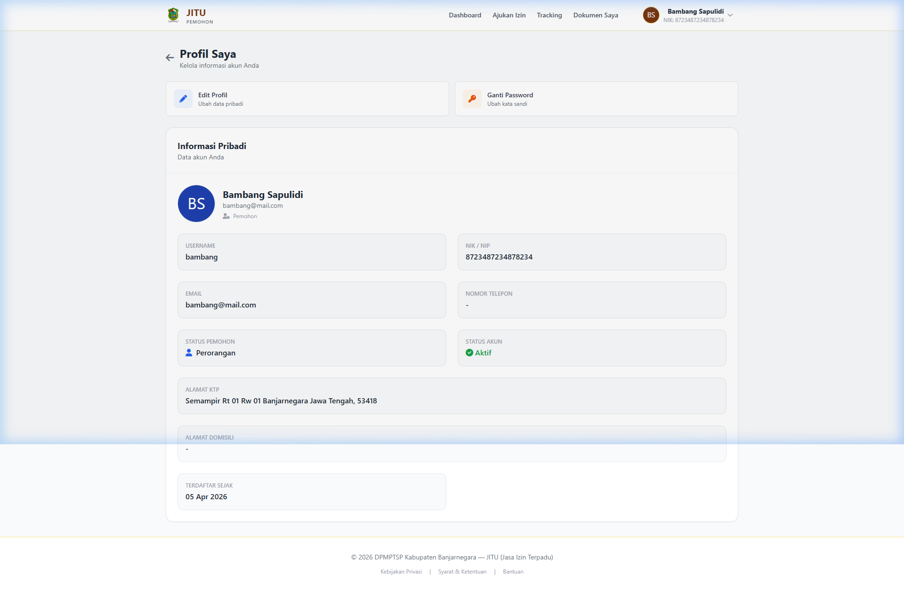
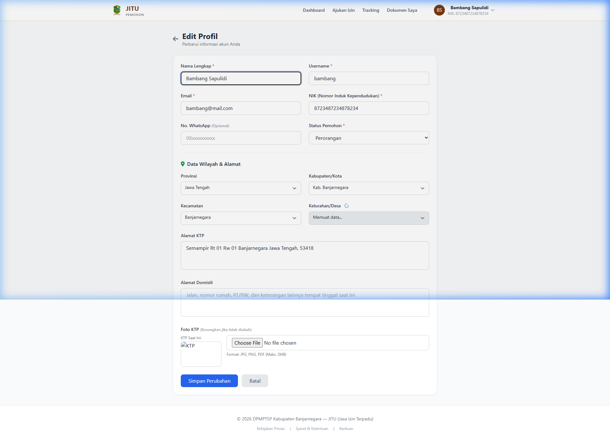
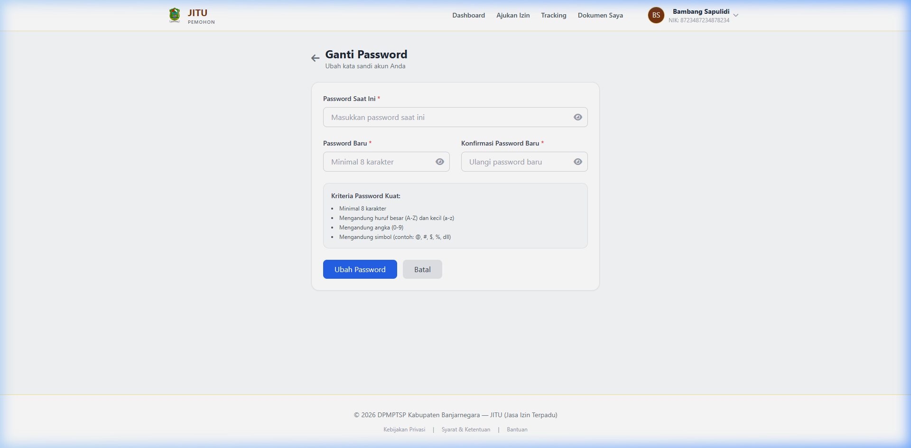

📝
MANUAL BOOK
Panduan Penggunaan Halaman Pemohon
JITU — Sistem Perizinan Terpadu
Kabupaten Banjarnegara
Versi 1.0 — Juni 2026
| Judul | Halaman |
|---|
BAB 1 Pendahuluan3 |
1.1 Tentang Aplikasi JITU3 |
1.2 Tujuan Manual Book3 |
1.3 Kebutuhan Sistem3 |
1.4 Struktur Menu Pemohon4 |
|
BAB 2 Registrasi Akun5 |
2.1 Langkah Registrasi5 |
2.2 Verifikasi Akun5 |
|
BAB 3 Login ke Sistem6 |
3.1 Langkah-Langkah Login6 |
3.2 Lupa Password7 |
|
BAB 4 Dashboard (Beranda)8 |
4.1 Komponen Dashboard8 |
|
BAB 5 Ajukan Izin10 |
5.1 Memilih Jenis Perizinan10 |
5.2 Mengisi Formulir Pengajuan11 |
5.3 Mengunggah Dokumen Persyaratan11 |
5.4 Mengirim Pengajuan12 |
|
BAB 6 Tracking Pengajuan13 |
6.1 Daftar Tracking13 |
6.2 Detail Tracking14 |
|
BAB 7 Dokumen Saya15 |
7.1 Dokumen Umum15 |
7.2 Dokumen Spesifik15 |
|
BAB 8 Profil & Keamanan Akun16 |
8.1 Melihat Profil16 |
8.2 Edit Profil17 |
8.3 Ganti Password18 |
|
BAB 9 Logout19 |
|
BAB 1
Pendahuluan
1.1 Tentang Aplikasi JITU
JITU (Jaringan Izin Terpadu) adalah sistem informasi perizinan online yang dikembangkan oleh Pemerintah Kabupaten Banjarnegara. Melalui aplikasi ini, masyarakat dapat mengajukan permohonan izin secara digital tanpa harus datang ke kantor dinas, sehingga proses perizinan menjadi lebih cepat, transparan, dan efisien.
1.2 Tujuan Manual Book
Manual book ini disusun sebagai panduan bagi Pemohon (Masyarakat) dalam menggunakan seluruh fitur layanan perizinan online yang tersedia pada halaman pemohon aplikasi JITU. Dokumen ini mencakup langkah-langkah mulai dari registrasi akun, login, pengajuan izin, hingga tracking status perizinan.
1.3 Kebutuhan Sistem
| Komponen | Spesifikasi Minimum |
|---|
| Browser | Google Chrome, Mozilla Firefox, Microsoft Edge (versi terbaru) |
| Koneksi Internet | Broadband/WiFi stabil |
| Resolusi Layar | 1366 × 768 piksel atau lebih tinggi (tersedia juga tampilan mobile) |
| Dokumen | Scan KTP, Pas Foto, dan dokumen persyaratan lain dalam format gambar (JPG/PNG) atau PDF |
1.4 Struktur Menu Pemohon
Berikut adalah menu yang tersedia pada halaman pemohon:
| Menu | Fungsi |
|---|
| Dashboard | Ringkasan status pengajuan, statistik, dan profil singkat |
| Ajukan Izin | Memilih jenis izin dan mengisi formulir pengajuan |
| Tracking | Memantau progress/status pengajuan secara real-time |
| Dokumen Saya | Mengelola dokumen umum dan dokumen spesifik perizinan |
| Profil Saya | Melihat dan mengedit informasi akun |
| Ganti Password | Mengubah kata sandi akun |
BAB 2
Registrasi Akun
Sebelum dapat menggunakan layanan perizinan online, Anda harus mendaftarkan akun pemohon terlebih dahulu.
2.1 Langkah Registrasi
- Buka browser dan akses alamat URL aplikasi JITU.
- Pada halaman utama (landing page), cari dan klik tombol Daftar atau Register.
- Isi formulir pendaftaran dengan data yang benar:
- Nama Lengkap — Sesuai KTP
- NIK (No. KTP) — 16 digit
- Email — Email aktif untuk verifikasi dan notifikasi
- No. WhatsApp — Nomor aktif
- Username — Nama pengguna untuk login
- Password — Minimal 8 karakter
- Konfirmasi Password — Ulangi password
- Tipe Pemohon — Perorangan atau Badan Usaha
- Unggah Foto KTP untuk verifikasi identitas.
- Isi alamat lengkap (Provinsi, Kabupaten, Kecamatan, Kelurahan).
- Jawab pertanyaan CAPTCHA keamanan.
- Klik Daftar untuk mengirimkan pendaftaran.
2.2 Verifikasi Akun
Setelah mendaftar, akun Anda akan diverifikasi oleh petugas. Status akun dapat berupa:
| Status | Keterangan |
|---|
| Aktif | Akun telah diverifikasi dan dapat digunakan untuk login |
| Menunggu | Akun sedang dalam proses verifikasi oleh petugas |
| Ditolak | Data tidak valid, silakan hubungi petugas |
ℹ️ Informasi
Proses verifikasi biasanya membutuhkan waktu 1×24 jam kerja. Anda akan menerima notifikasi melalui email setelah akun diverifikasi.
BAB 3
Login ke Sistem
3.1 Langkah-Langkah Login
- Buka browser dan akses URL aplikasi JITU, kemudian tambahkan
/login di belakang URL.
- Masukkan Username yang telah didaftarkan.
- Masukkan Password. Klik ikon mata (👁) untuk menampilkan/menyembunyikan password.
- Jawab pertanyaan CAPTCHA keamanan berupa soal penjumlahan (contoh: "5 + 3 = ?"). Masukkan jawaban di kolom "Hasil".
- Centang "Ingat saya" jika ingin tetap login pada sesi berikutnya (opsional).
- Klik tombol Login untuk masuk.

Gambar 3.1 — Halaman Login JITU
💡 Tips
Pastikan Anda menggunakan username (bukan email) untuk login. Jika lupa username, hubungi petugas di kantor perizinan.
3.2 Lupa Password
- Klik tautan "Lupa password?" di bawah form login.
- Masukkan alamat email yang terdaftar pada akun Anda.
- Sistem akan mengirimkan tautan reset password ke email Anda.
- Buka email dan klik tautan tersebut.
- Masukkan password baru dan konfirmasi password.
- Klik Reset Password.
BAB 4
Dashboard (Beranda)
Dashboard merupakan halaman utama setelah login yang menyajikan ringkasan informasi penting tentang seluruh pengajuan perizinan Anda.

Gambar 4.1 — Dashboard Pemohon JITU
4.1 Komponen Dashboard
A. Banner Selamat Datang
Menampilkan ucapan selamat datang beserta nama Anda dan tombol cepat untuk Ajukan Izin Baru.
B. Kartu Statistik
| Kartu | Keterangan |
|---|
| Total Pengajuan | Jumlah seluruh perizinan yang pernah Anda ajukan |
| Sedang Diproses | Jumlah pengajuan yang masih dalam tahap pemrosesan |
| Butuh Perbaikan | Pengajuan yang dikembalikan untuk diperbaiki |
| Izin Terbit | Pengajuan yang telah selesai dan izin diterbitkan |
C. Daftar Pengajuan Terbaru
Menampilkan tabel riwayat pengajuan perizinan Anda, mencakup: No. Registrasi, Jenis Perizinan, Tanggal Pengajuan, Status, dan tombol Detail.
D. Kartu Profil Singkat
Di sisi kanan dashboard, ditampilkan ringkasan profil Anda: Nama, NIK, Email, No. Telepon, dan Status Akun beserta tautan ke halaman profil lengkap.
E. Navigasi Utama
Menu navigasi terletak di bagian atas (header) dan pada mobile tersedia di bagian bawah layar (bottom navigation bar):
- Dashboard — Beranda
- Ajukan Izin — Membuat pengajuan baru
- Tracking — Memantau status pengajuan
- Dokumen Saya — Mengelola dokumen
BAB 5
Ajukan Izin
Menu ini digunakan untuk mengajukan permohonan perizinan baru. Anda akan dipandu melalui beberapa tahapan mulai dari pemilihan jenis izin hingga pengiriman formulir.
5.1 Memilih Jenis Perizinan

Gambar 5.1 — Halaman Pilih Jenis Perizinan
- Klik menu Ajukan Izin pada navigasi.
- Halaman akan menampilkan daftar semua jenis perizinan yang tersedia dalam bentuk kartu.
- Gunakan kolom pencarian di bagian atas untuk mencari jenis izin tertentu.
- Klik tombol Ajukan pada kartu jenis izin yang ingin diajukan.
ℹ️ Informasi Jenis Izin
Setiap kartu menampilkan: Nama Perizinan, Nama OPD (instansi terkait), dan SLA (estimasi waktu penyelesaian dalam hari kerja).
5.2 Mengisi Formulir Pengajuan
Setelah memilih jenis izin, Anda akan diarahkan ke halaman formulir pengajuan yang terdiri dari beberapa bagian:
A. Data Pemohon (Otomatis)
Bagian ini terisi otomatis dari profil Anda: Nama, NIK, Alamat, Email, dan No. Telepon. Pastikan data sudah benar sebelum melanjutkan.
B. Data Perizinan
Isi seluruh field yang disediakan sesuai jenis perizinan. Field dapat berupa:
- Teks — Input data singkat (nama usaha, lokasi, dll.)
- Angka — Input numerik (luas lahan, jumlah, dll.)
- Tanggal — Pemilih tanggal (tanggal mulai, masa berlaku, dll.)
- Pilihan — Dropdown atau radio button
- Textarea — Input teks panjang (keterangan, deskripsi)
⚠️ Perhatian
Field bertanda bintang (*) wajib diisi. Formulir tidak dapat dikirim jika ada field wajib yang kosong.
5.3 Mengunggah Dokumen Persyaratan
- Scroll ke bagian "Dokumen Persyaratan" di formulir pengajuan.
- Klik tombol Pilih File pada setiap dokumen yang diminta.
- Pilih file dari perangkat Anda (format: JPG, PNG, atau PDF).
- Pastikan file terbaca dengan jelas dan ukuran tidak melebihi batas maksimal (2MB per file).
💡 Tips
Anda dapat mengunggah dokumen umum (KTP, Pas Foto) terlebih dahulu melalui menu Dokumen Saya agar otomatis terlampir pada setiap pengajuan.
5.4 Mengirim Pengajuan
- Periksa kembali seluruh data yang telah diisi.
- Centang kotak persetujuan bahwa data yang diisi adalah benar.
- Klik tombol Kirim Pengajuan.
- Sistem akan menampilkan halaman konfirmasi beserta No. Registrasi Anda.
- Simpan atau catat No. Registrasi tersebut untuk keperluan tracking.
💡 Tips
Setelah pengajuan berhasil dikirim, Anda akan menerima notifikasi melalui email. Pantau perkembangan pengajuan Anda melalui menu Tracking.
BAB 6
Tracking Pengajuan
Menu Tracking memungkinkan Anda memantau status dan progress pengajuan perizinan secara real-time.
6.1 Daftar Tracking

Gambar 6.1 — Halaman Tracking Pengajuan
Halaman tracking menampilkan seluruh pengajuan Anda dalam bentuk kartu yang berisi:
| Informasi | Keterangan |
|---|
| No. Registrasi | Nomor unik pengajuan (contoh: REG-20260616-01994) |
| Status | Label status: Dalam Proses, Disetujui & Selesai, Butuh Perbaikan, Ditolak |
| Jenis Perizinan | Nama perizinan yang diajukan |
| Tanggal Pengajuan | Tanggal pengajuan dikirimkan |
| Tahap | Posisi saat ini dalam alur validasi (contoh: Tahap 2 dari 6) |
| Progress Bar | Indikator visual persentase kemajuan pengajuan |
6.2 Detail Tracking
Klik pada salah satu kartu pengajuan untuk melihat detail tracking, yang mencakup:
- Timeline Alur Validasi — Tahapan yang sudah dilalui dan yang sedang berjalan
- Keterangan Setiap Tahap — Nama tahap, penanggung jawab (role), dan status
- Catatan Verifikator — Catatan/komentar dari petugas verifikasi
- Riwayat Perubahan Status — Log perubahan status beserta waktu
- Dokumen yang Diunggah — Daftar dokumen yang telah diupload
- Dokumen Hasil — Unduh Surat Rekomendasi atau Surat Izin (jika sudah terbit)
⚠️ Perlu Perbaikan
Jika status pengajuan berubah menjadi "Perlu Perbaikan", klik Detail untuk melihat catatan dari petugas tentang apa yang perlu diperbaiki. Kemudian klik tombol Edit Pengajuan untuk melakukan koreksi dan mengirim ulang.
BAB 7
Dokumen Saya
Menu Dokumen Saya adalah repositori dokumen pribadi Anda yang tersimpan dalam sistem. Dokumen yang diunggah di sini dapat digunakan kembali pada setiap pengajuan perizinan tanpa harus mengunggah ulang.

Gambar 7.1 — Halaman Dokumen Saya
7.1 Dokumen Umum
Tab Dokumen Umum berisi dokumen wajib yang diperlukan untuk semua jenis perizinan:
| Dokumen | Format | Keterangan |
|---|
| KTP (Kartu Tanda Penduduk) | JPG, PNG, PDF | Scan/foto KTP yang masih berlaku |
| Pas Foto | JPG, PNG | Foto terbaru ukuran 3×4 atau 4×6 |
Cara Mengunggah Dokumen Umum
- Buka tab Dokumen Umum.
- Klik tombol Upload pada dokumen yang ingin diunggah.
- Pilih file dari perangkat Anda.
- File akan otomatis diunggah dan tersimpan.
- Untuk mengganti file, klik tombol Ganti pada dokumen yang sudah terunggah.
7.2 Dokumen Spesifik
Tab Dokumen Spesifik berisi dokumen-dokumen yang terkait dengan masing-masing pengajuan perizinan. Dokumen ini di-upload saat proses pengajuan dan dapat diakses kembali di sini.
💡 Tips
Unggah KTP dan Pas Foto Anda segera setelah registrasi agar proses pengajuan perizinan lebih cepat. Dokumen umum yang sudah diunggah akan otomatis terlampir pada formulir pengajuan.
BAB 8
Profil & Keamanan Akun
Menu profil diakses melalui dropdown pengguna di pojok kanan atas halaman, atau melalui tautan di kartu profil pada dashboard.
8.1 Melihat Profil

Gambar 8.1 — Halaman Profil Saya
Halaman Profil menampilkan informasi lengkap akun Anda:
| Informasi | Keterangan |
|---|
| Nama Lengkap | Nama sesuai KTP |
| Email | Alamat email terdaftar |
| Username | Nama pengguna untuk login |
| NIK | Nomor Induk Kependudukan |
| No. Telepon/WA | Nomor WhatsApp terdaftar |
| Status Pemohon | Perorangan atau Badan Usaha |
| Status Akun | Aktif/Tidak Aktif |
| Alamat KTP | Alamat sesuai KTP (Provinsi, Kabupaten, Kecamatan, Kelurahan) |
| Alamat Domisili | Alamat tempat tinggal saat ini |
8.2 Edit Profil

Gambar 8.2 — Halaman Edit Profil
- Pada halaman Profil, klik tombol Edit Profil.
- Ubah data yang ingin diperbarui:
- Nama, Username, Email, NIK, No. WhatsApp
- Status Pemohon (Perorangan/Badan Usaha)
- Alamat KTP (Provinsi, Kabupaten, Kecamatan, Kelurahan, RT/RW, Detail)
- Alamat Domisili (bisa centang "Sama dengan alamat KTP")
- Klik Simpan Perubahan.
⚠️ Perhatian
Perubahan pada NIK mungkin memerlukan verifikasi ulang oleh petugas. Pastikan NIK yang dimasukkan sudah benar dan sesuai KTP.
8.3 Ganti Password

Gambar 8.3 — Halaman Ganti Password
- Klik Ganti Password pada halaman profil atau melalui dropdown navigasi.
- Masukkan Password Saat Ini untuk verifikasi identitas.
- Masukkan Password Baru (minimal 8 karakter).
- Masukkan ulang Konfirmasi Password Baru.
- Klik Perbarui Password.
💡 Kriteria Password Kuat
- Minimal 8 karakter
- Mengandung huruf besar dan kecil
- Mengandung angka
- Mengandung karakter khusus (@, #, $, !, dll.)
- Tidak sama dengan password sebelumnya
BAB 9
Logout
Untuk keluar dari sistem dan mengakhiri sesi login Anda:
- Klik ikon profil/nama Anda di pojok kanan atas halaman.
- Pada menu dropdown yang muncul, klik Logout.
- Sistem akan mengakhiri sesi dan mengarahkan Anda ke halaman login.
⚠️ Perhatian
Selalu lakukan logout setelah selesai, terutama jika menggunakan perangkat publik (warnet, komputer kantor bersama, dll.) untuk menjaga keamanan akun Anda.
ℹ️ Sesi Otomatis Berakhir
Jika Anda tidak aktif selama 120 menit, sistem akan otomatis mengakhiri sesi. Anda perlu login kembali untuk melanjutkan.
📞 Butuh Bantuan?
Jika Anda mengalami kendala dalam menggunakan aplikasi JITU, silakan hubungi:
- Kantor Dinas Penanaman Modal dan Pelayanan Terpadu Satu Pintu (DPMPTSP) Kabupaten Banjarnegara
- Kunjungi menu Pengaduan pada halaman utama website JITU
- Atau hubungi petugas melalui informasi kontak di website resmi